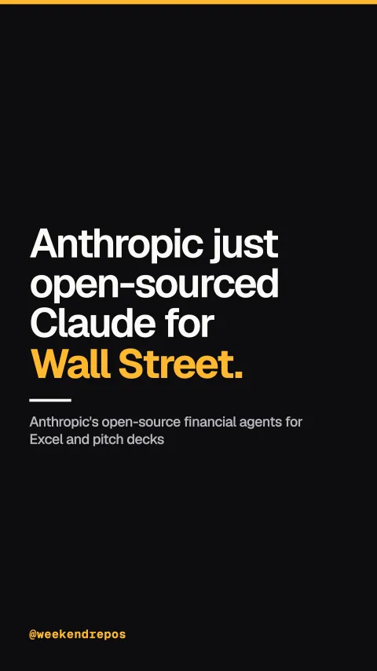

anthropics/financial-services
Anthropic's open-source financial agents for Excel and pitch decks

Anthropic just open-sourced Claude for Wall Street.
Builds live DCF and LBO valuation models directly inside Excel.
First, the Model Builder agent connects directly to Microsoft Excel, constructing full discounted cash flow and three-statement financial models from scratch.
Model Builder agent · live Excel integration
Generates institutional pitch decks from precedent transactions in seconds.
Second, the Pitch Agent pulls comps and precedent transactions, assembling complete institutional pitch decks in seconds instead of fourteen manual hours.
Pitch Agent · automated comps & decks
Automates general ledger reconciliations and complex month-end closings.
Third, it ships dedicated agents for fund operations, tracing breaks across general ledgers and drafting audit-ready LP statements.
Fund admin · GL reconciliation & audit
Deploy as Claude Cowork plugins or via the Managed Agents API.
Everything runs either as a self-contained Claude Cowork desktop plugin, or through Anthropic's new Managed Agents API at enterprise scale.
Dual deployment · Cowork plugin + API
37,000 stars. Python. Apache-2.0 licensed.
The repo already has over thirty-seven thousand stars on GitHub, written in Python, and completely free under Apache two.
anthropics/financial-services · Apache-2.0 · 37.1k stars